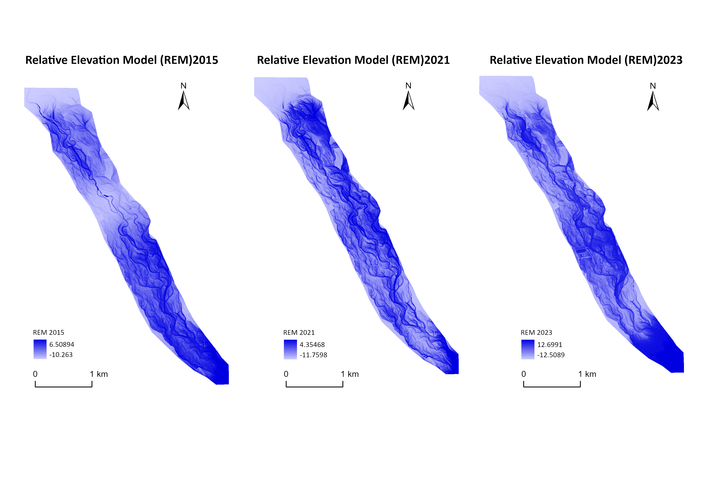
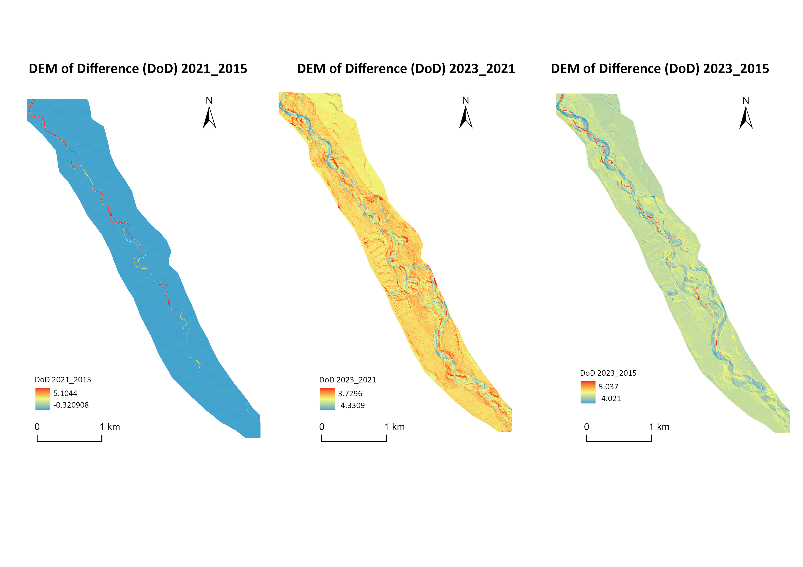
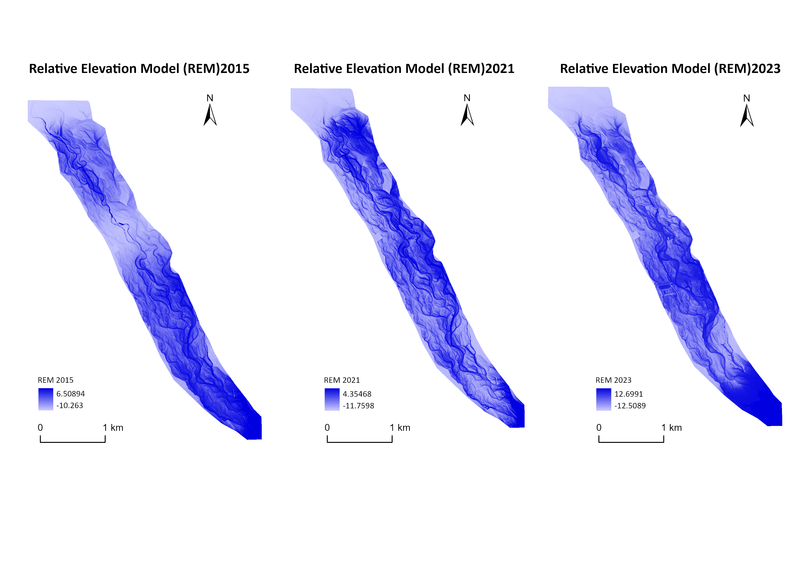
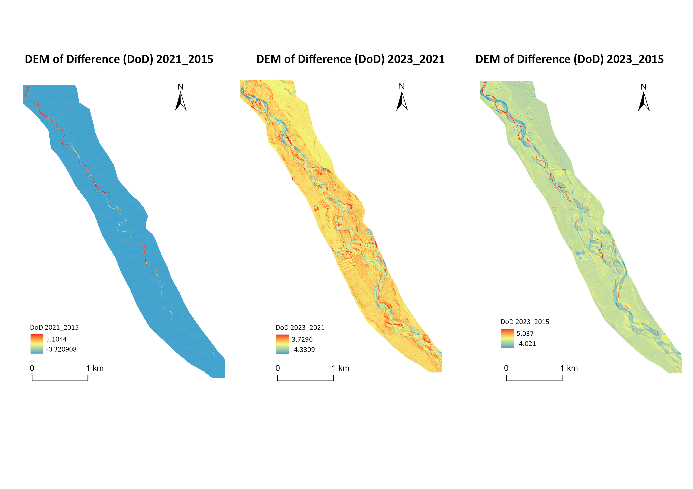

Integrating LiDAR DEMs and GIS mapping Topographic change of the Selwyn River
 



Selwyn River in Canterbury, New Zealand, experiences significant morphological changes due to topographic influences, impacting its ecological health and land use. Understanding these changes is crucial for effective river management. This study employs high-resolution LiDAR Digital Elevation Models (DEMs) and GIS to analyze the river's evolution.
- Analyzed topographic changes of the Selwyn River using high-resolution LiDAR DEM data (1 m) from 2015, 2021, and 2023.
- Conducted GIS-based spatial analysis, applying Cross-section Elevation Profiles, DEM of Difference (DoD), and Relative Elevation Model (REM) techniques.
- Assessed topographic variations to inform river management and protection strategies.
- Built by Kassi Yan with ♥-